ServiROV Servicios Acuícolas SpA
Somos una empresa de servicios complementarios para la salmonicultura, con operaciones continuas en diversos centros de cultivo desde el año 2018. Nuestra principal función es brindar servicios de excelencia en robótica submarina con vehículos operados remotamente (ROV), asegurando la continuidad de las operaciones y la protección del activo biológico.
Trabajadores Especializados en Robótica
Ciclos Productivos Acuícolas Realizados
Talleres de Perfeccionamiento a Usuarios
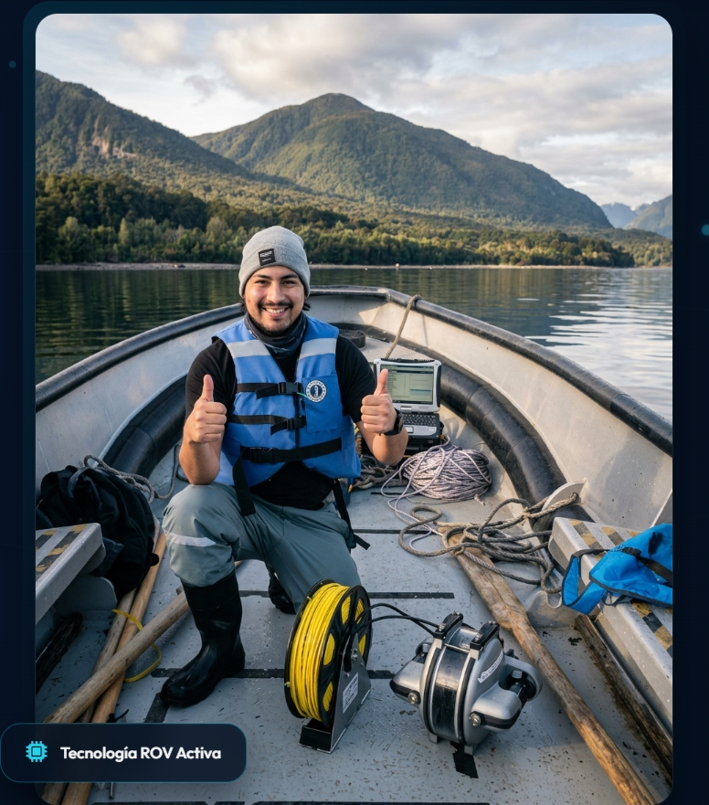
“Porque sabemos lo importante que es contar con un excelente soporte técnico, nuestros equipos están capacitados para contribuir a la cadena de valor de nuestros clientes.”
Nuestros Clientes
Grandes empresas productoras acuícolas e instituciones confían en el rigor técnico de nuestras operaciones submarinas.
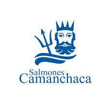
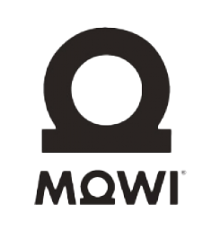
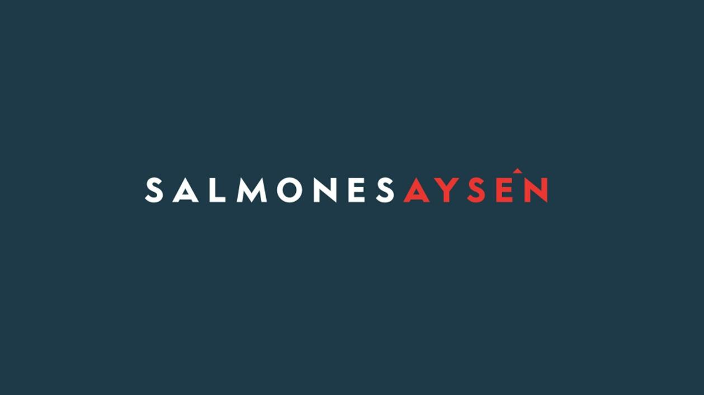
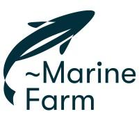
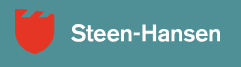
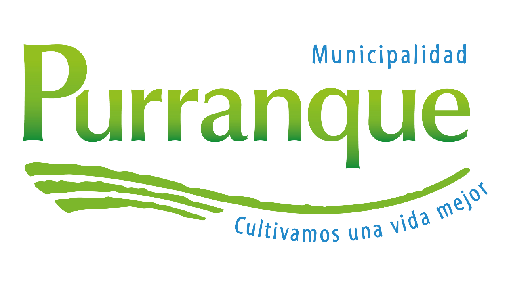
Nuestros Servicios Generales
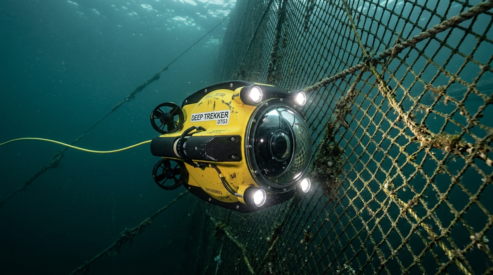
Servicio de Robótica Submarina
*imágenes de referencia*
Servicio integral de robótica submarina aplicada a la industria salmonera y empresas públicas y privadas. Filmaciones en ultra alta definición e inspecciones estructurales seguras.
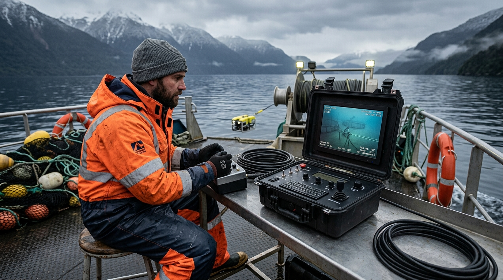
Arriendo de Equipos y Capacitaciones
*imágenes de referencia*
Servicio de arriendo de equipos R.O.V a empresas públicas y privadas con prestaciones técnicas. Especialización técnica a través de cursos y talleres de robótica submarina.
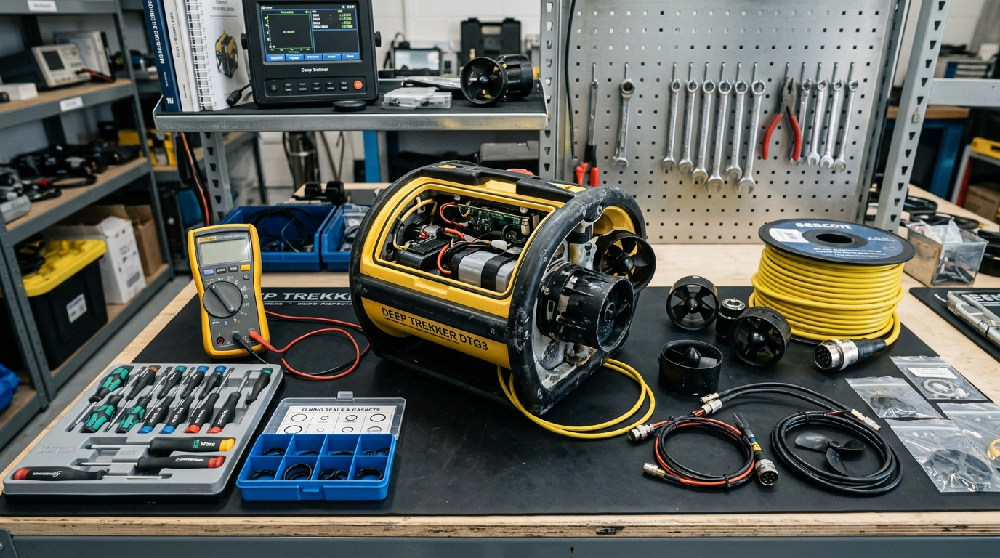
Servicio Técnico y Repuestos
*imágenes de referencia*
Contamos con taller y servicio técnico especializado en robótica, electrónica y venta de repuestos para equipos R.O.V Deep Trekker Modelo DTG3 y DTG2, y equipos BlueROV.
Servicios Aplicados a la Industria Acuícola
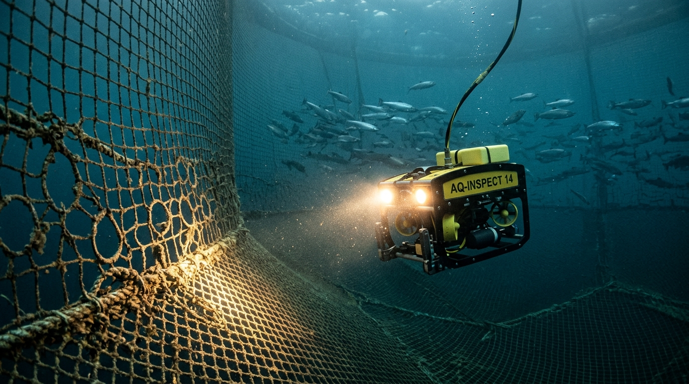
Extracción Mortalidad e Inspección de Redes
*imágenes de referencia*
Equipo técnico especializado en la extracción de mortalidad con ROV y detección oportuna de roturas o anomalías en redes peceras y loberas para resguardo de la biomasa.
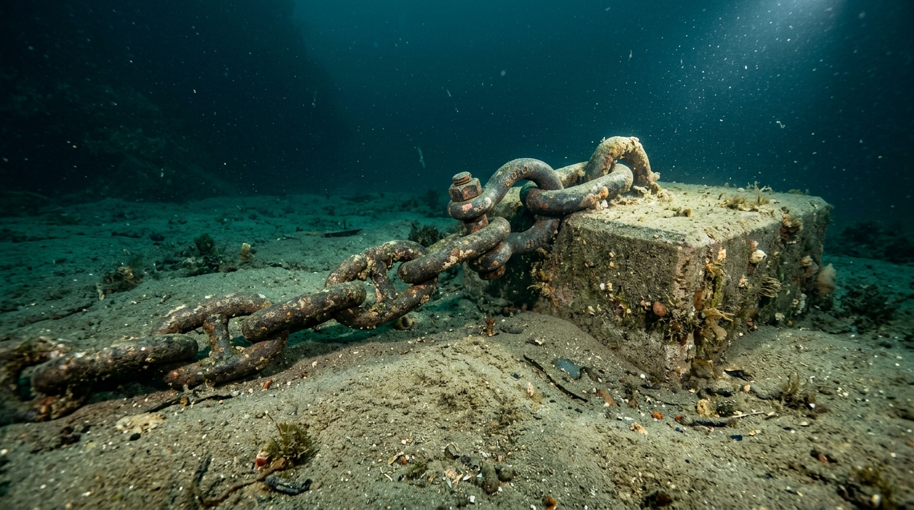
Inspección de Fondeos y Fondo Marino
*imágenes de referencia*
Verificación y certificación técnica de sistemas de fondeo, filmaciones de caracterización de fondo marino, presencia de alimento y localización de restos náufragos.
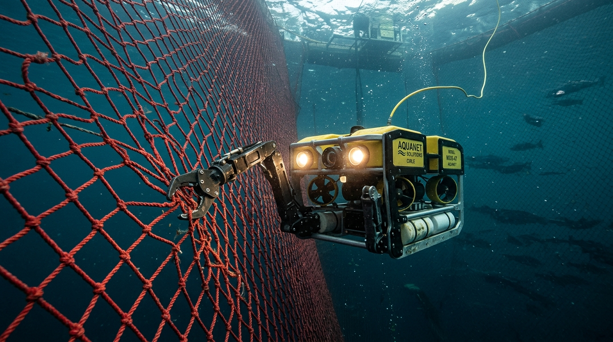
Reparación de Redes y Apoyo en Cosecha
*imágenes de referencia*
Equipos para la reparación de redes loberas que puedan comprometer la pérdida de biomasa. Personal de apoyo especializado en faenas de cosecha para inspección y verificación in situ.
Taller Técnico Especializado Multimarca
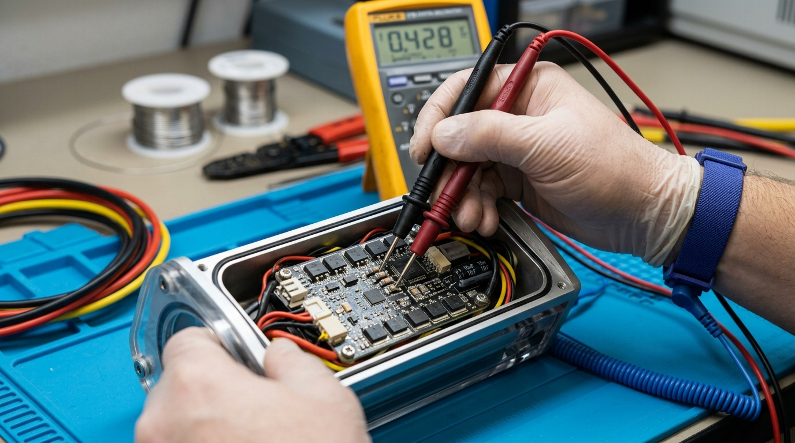
Identificación y Diagnóstico de Fallas
*imágenes de referencia*
Equipo técnico especializado en la búsqueda y diagnóstico certero de fallas comunes y problemas electrónicos en Equipos Deep Trekker y BlueROV.
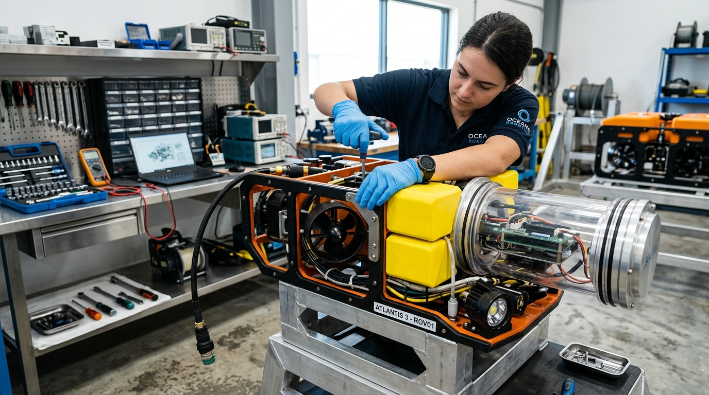
Reparación de Equipos
*imágenes de referencia*
Contamos con técnicos de amplia experiencia en la reparación integral de equipos Marca Deep Trekker Modelos DTG2 y DTG3, y Marca Blue ROV 6 thruster.
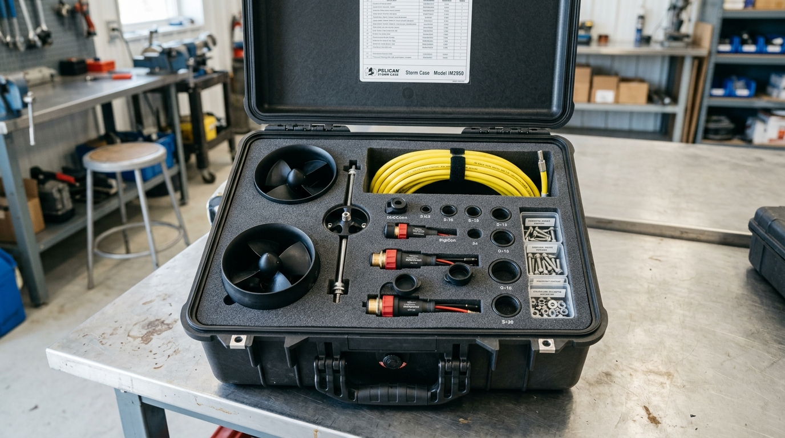
Stock Permanente de Repuestos
*imágenes de referencia*
Mantenemos un stock de repuestos específicos para la reparación oportuna de fallas comunes, ya sea en ROV, controlador o carretes, sin esperas de importación.
“Porque sabemos lo importante que es contar con un excelente soporte técnico, nuestros equipos están capacitados para contribuir a la cadena de valor de nuestros clientes.”
Trayectoria Comprobada en Centros de Cultivo
Detalle de operaciones continuas ejecutadas en diversas zonas de la Patagonia chilena desde el año 2018.
Salmones Camanchaca
2018 — A la FechaDesde el año 2018 prestando servicios ininterrumpidos de robótica submarina. Servicios de extracción de mortalidad, inspección minuciosa de redes y certificación de fondeos sin registrar fallas de servicio.
Salmones Aysén
2024 — A la FechaPrestando servicios especializados de extracción de mortalidad e inspección submarina de redes peceras y loberas en centros de cultivo en las áreas de Hornopirén y Puerto Montt.
Mowi Chile
2022 — 2025Prestando servicios de extracción de mortalidad e inspección técnica de redes en centros de alta producción acuícola en las áreas de Hornopirén y el Archipiélago de Chiloé.
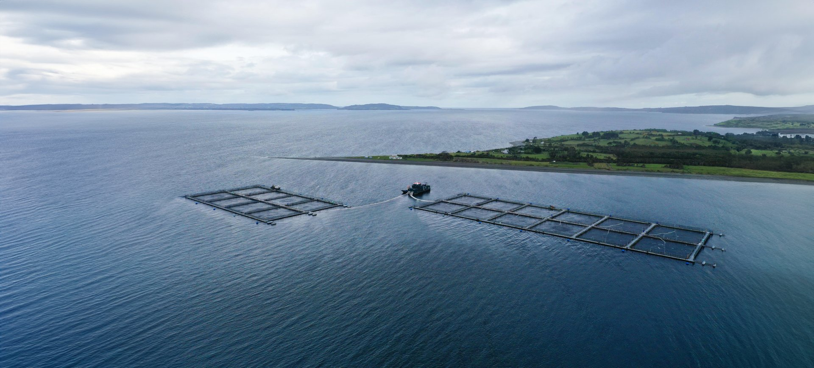
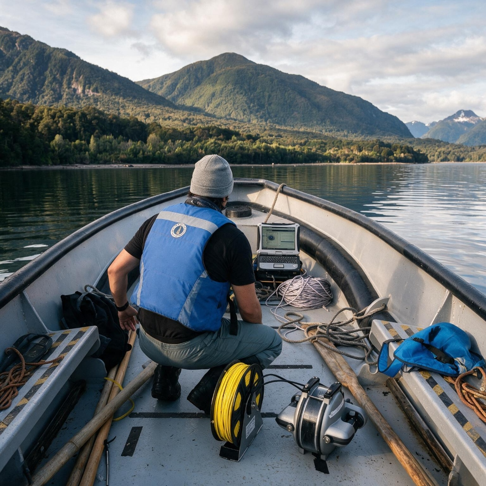
Liderazgo Comprobado en la Salmonicultura
Nuestra trayectoria ha sido destacada en medios especializados de la industria acuícola por impulsar el emprendimiento tecnológico regional y generar empleo local calificado en Hualaihué y Puerto Montt.
Nuestra Misión
Proveer servicios de alto estándar a la industria salmonera, aportando soluciones eficientes y confiables, respaldadas por nuestra experiencia en acuicultura y un firme compromiso con la continuidad y optimización de sus procesos productivos.
Nuestros Valores
Pilares fundamentales que rigen cada una de nuestras intervenciones submarinas y relaciones humanas.
Respeto, Responsabilidad y Buena Convivencia
Nuestra empresa se fundamenta en el respeto, la responsabilidad y la buena convivencia, promoviendo un ambiente laboral colaborativo y en estricto cumplimiento de la normativa legal y marítima vigente.
Desarrollo del Talento y la Innovación
Fomentamos el desarrollo del talento, el trabajo en equipo y la innovación constante, impulsando ideas y soluciones de ingeniería que nos permitan mejorar continuamente en cada ciclo productivo.
Crecimiento Sustentable y Medio Ambiente
Nos comprometemos con un crecimiento sustentable, actuando de manera rigurosamente responsable con el medio ambiente marino de la Patagonia y con las comunidades de nuestro entorno.
Centros de Operaciones
¿Tienes un requerimiento de robótica submarina, extracción de mortalidad, certificación de fondeos o requieres reparación técnica de ROVs? Contáctanos directamente.
El Tepual N°8, Hornopirén, Comuna de Hualaihué.
Dependencias con taller propio en la ciudad de Puerto Montt.
Recursos Audiovisuales:
Carpeta de Videos en Google DriveCotizar Servicio o Solicitar Soporte
Completa el siguiente formulario y un ingeniero de operaciones se contactará contigo a la brevedad.